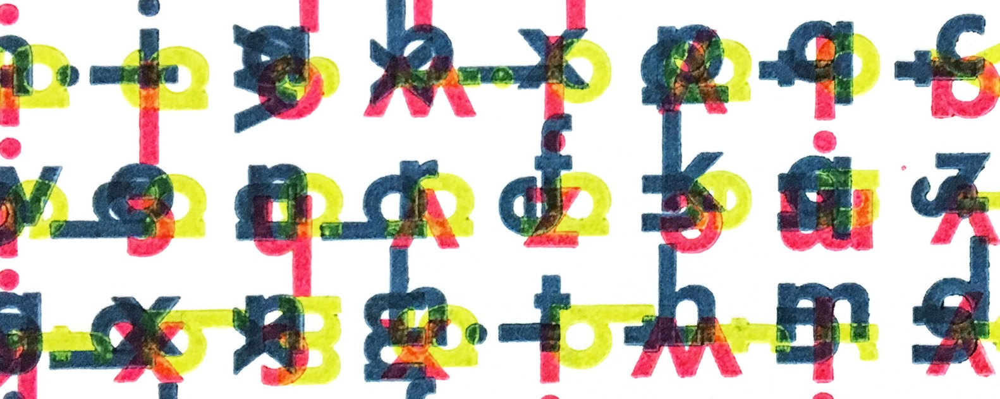

Preprints
Schopler, M., Simha, A., Dalton, R.M., Wilson, E.M., Redick, E., Youngsteadt, E., Petry, W.K. (preprint). Spring ephemeral Erythronium umbilicatum may not be vulnerable to phenological mismatch with overstory trees. [preprint] [data]
Williams, J., Angert, A., Campbell, A., Compagnoni, A., DeMarche, M., Evans, M., Fowler, J., González, E., Iler, A.M., Loesberg, J., Louthan, A., Martin, A., Moutouama, J., Nordstrom, S., Petry, W.K., Sęn, B., Sheth, S.N., Miller, T.E.X. (preprint) Linking climate and demography to predict population dynamics and persistence under global change. [preprint]
Peer-reviewed publications
Bain, J.A., Ogilvie, J.E., Petry, W.K. & CaraDonna, P.J. (2025) Nutrient niche dynamics among wild pollinators. Proceedings of the Royal Society - B, 292, 20250643. [doi] [pdf] [data]
Baudraz, M.E.A., Childs, D.Z., Kelly, R., Smith, A.L., Villellas, J., [PlantPop Net, including W.K. Petry], Buckley, Y.M. (2025) Several candidate size metrics explain vital rates across multiple populations throughout a widespread species’ range. Journal of Ecology. [doi] [pdf] [data]
Conlin, M.R., Krings, A., Petry, W., Forrester, J. & Crawford, J. (2024) Range-Wide Quantitative Habitat Characterization of Critically Imperiled Ludwigia ravenii (Onagraceae). Castanea, 89, 63–95. [doi] [pdf]
Blonder, B.W., Gaüzère, P., Iversen, L.L., Ke, P.-J., Petry, W.K., Ray, C.A., Salguero-Gómez, R., Sharpless, W., Violle, C. (2023) Predicting and controlling ecological communities via trait and environment mediated parameterizations of dynamical models. Oikos, 2023, e09415. [doi] [pdf] [data]
Jones, O.R., Barks, P., Stott, I., James, T.D., Levin, S., Petry, W.K., Capdevila, P., Che-Castaldo, J., Jackson, J., Römer, G., Schuette, C., Salguero-Gómez, R. (2022) Rcompadre and Rage—Two R packages to facilitate the use of the COMPADRE and COMADRE databases and calculation of life-history traits from matrix population models. Methods in Ecology and Evolution, 13, 770–781. [doi] [pdf] [CRAN Rcompadre] [CRAN Rage]
Gamelon, M., Firth, J.A., Moullec, M.L., Petry, W.K. & Salguero-Gomez, R. (2021) Longitudinal demographic data collection. In: Demographic Methods Across the Tree of Life (eds. Salguero-Gómez, R. & Gamelon, M.). Oxford University Press. [doi] [pdf]
Villellas, J., Ehrlén, J., Crone, E.E., Csergő, A.M., Garcia, M.B., Laine, A.-L., Roach, D.A., Salguero-Gómez, R., Wardle, G.M., [PlantPop Net, including W.K. Petry], Buckley, Y.M. (2021) Phenotypic plasticity masks range-wide genetic differentiation for vegetative but not reproductive traits in a short-lived plant. Ecology Letters, 24, 2378–2393. [doi] [pdf] [data]
Jerome, D.K., Petry, W.K., Mooney, K.A. & Iler, A.M. (2021) Snow melt timing acts independently and in conjunction with temperature accumulation to drive subalpine plant phenology. Global Change Biololgy, 27, 5054–5069. [doi] [pdf] [data]
Smith, A.L., Hodkinson, T.R., Villellas, J., Catford, J.A., Csergő, A.M., Blomberg, S.P., [PlantPop Net, including W.K. Petry], Buckley, Y.M. (2020) Global gene flow releases invasive plants from environmental constraints on genetic diversity. Proceedings of the National Academy of Sciences, 117, 4218-4227. [doi] [pdf] [data]
Galmán, A., Petry, W.K., Abdala-Roberts, L., Butrón, A., de la Fuente, M., Francisco, M., Kergunteuil, A., Rasmann, S. (2018) Inducibility of chemical defences in young oak trees is stronger in species with high elevational ranges. Tree Physiology, 39, 606-614. [doi] [pdf]
Romero, G.Q., Gonçalves-Souza, T., Kratina, P., Marino, N.A.C., Petry, W.K., Sobral-Souza, T., Roslin, T. (2018) Global predation pressure redistribution under future climate change. Nature Climate Change, 8, 1087. [doi] [pdf] [data]
Petry, W.K., Kandlikar, G.S., Kraft, N.J.B., Godoy, O. & Levine, J.M. (2018) A competition-defence trade-off both promotes and weakens coexistence in an annual plant community. Journal of Ecology, 106, 1806–1818. [doi] [pdf] [data]
Moreira, X., Petry, W.K., Mooney, K.A., Rasmann, S. & Abdala-Roberts, L. (2018) Elevational gradients in plant defences and insect herbivory: recent advances in the field and prospects for future research. Ecography, 41, 1485–1496. [doi] [pdf]
Abdala-Roberts, L., Galmán, A., Petry, W.K., Covelo, F., Fuente, M. de la, Glauser, G., Moreira, X. (2018) Interspecific variation in leaf functional and defensive traits in oak species and its underlying climatic drivers. PLOS ONE, 13, e0202548. [doi] [pdf]
Roslin, T., Hardwick, B., Novotny, V., Petry, W.K., [Dummy Caterpillar Project], Slade, E.M. (2017) Higher predation risk for insect prey at low latitudes and elevations. Science, 356, 742–744. [doi] [pdf] [data]
CaraDonna, P.J., Petry, W.K., Brennan, R.M., Cunningham, J.L., Bronstein, J.L., Waser, N.M., Sanders, N.J. (2017) Interaction rewiring and the rapid turnover of plant-pollinator networks. Ecology Letters, 20, 385–394. [doi] [pdf] [data]
Petry, W.K., Soule, J.D., Iler, A.M., Chicas-Mosier, A., Inouye, D.W., Miller, T.E.X., Mooney, K.A. (2016) Sex-specific responses to climate change in plants alter population sex ratio and performance. Science, 353, 69–71. [doi] [pdf] [data]
Moreira, X., Petry, W.K., Hernández-Cumplido, J., Morelon, S. & Benrey, B. (2016) Plant defence responses to volatile alert signals are population-specific. Oikos, 125, 950–956. [doi] [pdf] [data]
Moreira, X., Mooney, K.A., Rasmann, S., Petry, W.K., Carrillo-Gavilán, A., Zas, R., Sampedro, L. (2014) Trade-offs between constitutive and induced defences drive geographical and climatic clines in pine chemical defences. Ecology Letters, 17, 537–546. [doi] [pdf]
Petry, W.K., Perry, K.I., Fremgen, A., Rudeen, S.K., Lopez, M., Dryburgh, J., Mooney, K.A. (2013) Mechanisms underlying plant sexual dimorphism in multi-trophic arthropod communities. Ecology, 94, 2055–2065. [doi] [pdf]
Petry, W.K., Perry, K.I. & Mooney, K.A. (2012) Influence of macronutrient imbalance on native ant foraging and interspecific interactions in the field. Ecological Entomology, 37, 175–183. [doi] [pdf]
Mooney, K.A., Fremgen, A. & Petry, W.K. (2012) Plant sex and induced responses independently influence herbivore performance, natural enemies and aphid-tending ants. Arthropod-Plant Interactions, 6, 553–560. [doi] [pdf]
Petry, W.K., Foré, S.A., Fielden, L.J. & Kim, H.-J. (2010) A quantitative comparison of two sample methods for collecting Amblyomma americanum and Dermacentor variabilis (Acari: Ixodidae) in Missouri. Experimental and Applied Acarology, 52, 427–438. [doi] [pdf]
Other publications (reports & conference papers)
Petry, W.K. & I.K. Breckheimer (in press) Pairing on-ground and drone-based monitoring for rare plants: A case study in Avery Peak Twinpod (Physaria alpina). Aquilegia. [html] [pdf]
Ghasemi, P., Hiscott, H., Sears, A., Montoya, B.M., Castro-Bolinaga, C., Petry, W.K., Grunden, A.M., Breland, B., Scates, A. (2025) Integration of Plants and Microbially Induced Soil Stabilization for Sustainable Infrastructure Design. In: Proceedings of the ICBBG2025. Presented at the International Conference on Bio-mediated and Bio-inspired Geotechnics, Tempe, Arizona USA. [doi] [pdf]